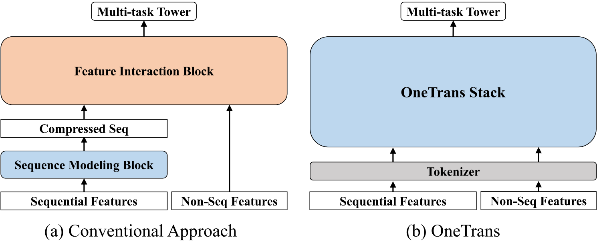
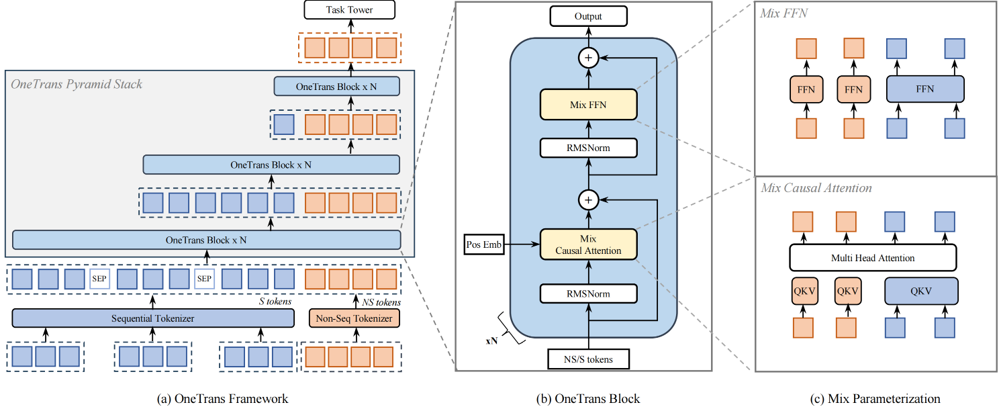

6.5. OneTrans: 统一序列与特征交差¶
RankMixer 通过 hardware-aware 架构设计解决了 GPU 利用率问题，但推荐系统的整体架构仍存在碎片化。工业界主流的推荐模型普遍采用 encode-then-interaction 范式：序列建模模块（DIN、LONGER）将行为序列编码为固定长度向量，然后与非序列特征拼接，输入特征交互模块（RankMixer）学习高阶交叉（如图 图6.5.1 (a)）。
这种分离式设计存在两个根本问题：（1）信息流受限，序列必须压缩为固定维度向量，静态特征无法在序列编码阶段发挥作用，只能后期“补救式”融合；（2）执行碎片化，两模块独立执行，无法享受 LLM 的系统优化（KV Caching、FlashAttention），且需分别调优，难以形成统一 scaling law。
OneTrans (Zhang et al., 2025) 提出根本性架构革新：用单一 Transformer backbone 同时完成序列建模和特征交互。如图 图6.5.1 (b) 所示，OneTrans 通过统一 tokenizer 将序列特征（S-tokens）和非序列特征（NS-tokens）转为统一 token 序列，在堆叠 Transformer 层中联合建模，打破序列与特征的信息壁垒，为应用 LLM 系统优化奠定基础。
{kind=link}

图6.5.1 架构对比¶
6.5.1. 统一 Tokenization¶
推荐系统的输入包含两类截然不同的特征：序列特征 \(\mathcal{S}\)（用户的多行为序列，如点击序列、加购序列、下单序列）和非序列特征 \(\mathcal{NS}\)（静态属性和上下文，如用户年龄、物品类目、查询词、当前时段）。传统方法将 \(\mathcal{S}\) 压缩为固定长度向量后与 \(\mathcal{NS}\) 拼接，而 OneTrans 的核心创新是：将两类特征统一转换为 token 序列，在同一个 Transformer 中处理。
对于序列特征 \(\mathcal{S} = \{\mathbf{S}_1, \dots, \mathbf{S}_n\}\)（如 \(n\) 种行为类型），每个序列 \(\mathbf{S}_i = [\mathbf{e}_{i1}, \dots, \mathbf{e}_{iL_i}]\) 包含 \(L_i\) 个事件 embedding（事件 = 物品 ID + 物品侧信息）。由于不同行为序列的原始维度可能不同，OneTrans 首先用行为特定的 MLP 将每个序列对齐到统一维度 \(d\)：
对齐后的多个序列需要合并为单一 token 序列。OneTrans
支持两种融合策略：（1）Timestamp-aware：如果行为事件带有时间戳，则按时间顺序交错排列所有行为，并添加行为类型标识符；（2）Timestamp-agnostic：如果无时间戳，则按照行为意图强度排序（如下单
→ 加购 → 点击），并在不同行为序列之间插入可学习的 [SEP] token
作为分隔符。实验表明，当时间戳可用时，timestamp-aware
策略效果更好，因为时间顺序本身蕴含了用户兴趣的演化模式。最终得到：
对于非序列特征 \(\mathcal{NS}\)（包括数值特征和类别特征，经过 bucketization 或 one-hot 编码后 embedding），OneTrans 将所有特征 concat 后通过单个 MLP 投影，然后切分为 \(L_{NS}\) 个 token（称为 Auto-Split Tokenizer）：
这种设计避免了手工特征分组的主观性，让模型自动学习如何组织非序列特征。最终，OneTrans 的初始输入是 S-tokens 和 NS-tokens 的拼接：
这个统一 token 序列的构造方式与传统方法有本质区别：传统方法压缩序列为单个向量，OneTrans 保留完整的序列 token。这意味着在后续的 Transformer 层中，每个行为事件都作为独立 token 参与 attention 计算，而非序列特征也以 token 形式存在，使得两类特征可以在同一个 attention 矩阵中交互。图 图6.5.2 展示了 OneTrans 的完整架构。
{kind=link}

图6.5.2 OneTrans 整体架构¶
6.5.2. Mixed Parameterization 的核心机制¶
如果直接用标准 Transformer 处理统一 token 序列，会遇到推荐系统特有的问题：token 的异质性。在 LLM 中，所有 token 都是词或 sub-word，语义空间相对统一，因此所有 token 共享 Q/K/V 和 FFN 参数是合理的。但在 OneTrans 中，S-tokens 来自行为序列（同质性强，都是用户与物品的交互事件），而 NS-tokens 来自完全不同的特征空间（用户年龄是人口统计学特征、物品价格是数值特征、查询词是文本特征）。如果强制所有 token 共享参数，会导致参数冲突，例如用于捕捉“序列中相邻物品相似性”的参数，对于“用户年龄 → 物品类目”的交互可能完全不适用。
OneTrans 的核心创新是 Mixed Parameterization：S-tokens 共享一套参数，每个 NS-token 拥有独立的 token-specific 参数。这种设计基于两个观察：（1）行为序列中的所有事件都在同一语义空间（物品空间），可以高效地共享参数学习序列模式；（2）非序列特征来自异构空间，需要独立参数捕捉各自的特性。
6.5.2.1. Mixed Causal Attention¶
在 OneTrans Block 中，Multi-Head Attention 的 Q/K/V 计算采用混合参数化。对于第 \(i\) 个 token \(\mathbf{x}_i\)，其 query、key、value 计算为：
其中权重矩阵 \(\mathbf{W}^{\Psi}_i\)（\(\Psi \in \{Q,K,V\}\)）遵循条件参数化：
这意味着所有 S-tokens 使用同一组 \(\mathbf{W}^Q_{\text{S}}, \mathbf{W}^K_{\text{S}}, \mathbf{W}^V_{\text{S}}\)，而第 \(j\) 个 NS-token 有自己的 \(\mathbf{W}^Q_{\text{NS},j}, \mathbf{W}^K_{\text{NS},j}, \mathbf{W}^V_{\text{NS},j}\)。
OneTrans 采用 Causal Attention Mask，但 NS-tokens 放置在 S-tokens 之后，这导致了三个关键的信息流模式：
S-side 因果依赖：每个 S-token 只能 attend 到它之前的 S-tokens。对于 timestamp-aware 序列，这自然建模了时间因果关系；对于 timestamp-agnostic 序列（按意图排序），causal mask 让高意图行为（如下单）的信息可以传递到低意图行为（如点击），实现“从强信号过滤弱信号”的效果。
NS-side 全局 attention：每个 NS-token 可以 attend 到所有 S-tokens（完整行为历史）以及它之前的 NS-tokens。这使得非序列特征可以充分利用序列证据，例如“物品类目”token 可以 attend 到所有历史点击的物品类目，自动学习“用户对该类目的历史偏好”。
支持 Pyramid：Causal mask 的方向性使得信息自然向序列尾部聚集，为后续的 Pyramid Stack 提供了理论基础（详见下一节）。
6.5.2.2. Mixed FFN¶
Feed-Forward Network 同样采用混合参数化：
其中 \(\mathbf{W}^1_i, \mathbf{W}^2_i\) 遵循与 attention 相同的条件参数化：S-tokens 共享 \(\mathbf{W}^1_{\text{S}}, \mathbf{W}^2_{\text{S}}\)，每个 NS-token 有独立的 \(\mathbf{W}^1_{\text{NS},i}, \mathbf{W}^2_{\text{NS},i}\)。
这里需要与 RankMixer 的 Per-Token FFN 做对比。RankMixer 为每个 token 配备独立 FFN（包括序列 token），参数量为 \(O(T \cdot d^2)\)（\(T\) 为 token 总数）。OneTrans 的 Mixed FFN 只为 \(L_{NS}\) 个 NS-tokens 配备独立参数，S-tokens 共享，参数量为 \(O(L_{NS} \cdot d^2 + d^2)\)。在推荐场景中，\(L_{NS} \ll L_S\)（非序列特征数量远小于序列长度），这使得 OneTrans 在保持表达能力的同时显著降低了参数开销。更重要的是，参数共享不是妥协，而是设计，行为序列的同质性使得共享参数可以更高效地学习序列模式，避免参数冗余。
OneTrans 使用 Pre-norm + RMSNorm。在推荐场景中，S-tokens 和 NS-tokens 的数值范围和统计特性差异显著，Post-norm 容易导致 attention 分数的尺度失衡（某些 token 的 attention logits 过大）引发训练不稳定。Pre-norm 在每个子层之前先归一化，确保输入 attention 和 FFN 的 token 表示在相近的尺度上，RMSNorm 进一步通过 root mean square 归一化提供更稳定的梯度传播。
6.5.3. Pyramid Stack 渐进式蒸馏¶
OneTrans 的 Causal Attention 有一个重要特性：信息自然向序列后方聚集。在第 \(n\) 层，位置 \(i\) 的 token 融合了位置 \(1, \dots, i\) 的信息；到第 \(n+1\) 层，位置 \(i+1\) 又融合了更新后的位置 \(1, \dots, i+1\) 的信息。随着层数加深，靠后的 token 逐渐成为前面所有 token 信息的“汇聚点”。特别地，NS-tokens 位于序列末尾，它们在深层会积累整个序列和前面 NS-tokens 的信息。
Pyramid Stack 正是利用这一特性：逐层减少参与 attention 计算的 query token 数量，只保留序列尾部的 token。具体地，设第 \(n\) 层的输入 token 序列长度为 \(L\)，定义一个尾部索引集合 \(\mathcal{Q} = \{L - L' + 1, \dots, L\}\)（\(L' < L\)）。在 attention 计算中：
Keys 和 Values：仍然从所有 \(L\) 个 token 计算，保持完整的上下文信息
Queries：只从 \(\mathcal{Q}\) 中的 \(L'\) 个 token 计算
Attention 输出只保留 \(\mathcal{Q}\) 对应位置的结果，序列长度从 \(L\) 收缩到 \(L'\)。通过在多层之间设置递减的 \(L'\)（如 1190 → 595 → 297 → … → 12），形成金字塔式的层级结构。
这种设计带来两个核心收益：
Progressive Distillation（渐进式蒸馏）：长行为序列（可能有数百上千个事件）通过逐层收缩，将信息逐步“蒸馏”到少量尾部 token 中。浅层 Transformer 学习局部模式（如相邻物品的相似性），深层 Transformer 在压缩后的 token 上学习全局模式（如长期兴趣漂移）。最终，所有序列信息都汇聚到 NS-tokens 中，为下游任务提供紧凑但信息丰富的表示。
Compute Efficiency（计算效率）：标准 Transformer 的 attention 复杂度为 \(O(L^2 d)\)，FFN 复杂度为 \(O(Ld^2)\)。Pyramid 将复杂度降低到 \(O(LL'd)\)（attention）和 \(O(L'd^2)\)（FFN）。当 \(L' \ll L\) 时（如序列长度从 1190 逐层减少到 12），计算量和激活内存都显著下降。
与标准 Transformer 相比，Pyramid Stack 的关键差异在于：标准 Transformer 需要在每一层保持完整序列长度，因为 LLM 需要输出每个位置的预测（如 next-token prediction）。而推荐任务只需要最终的排序分数，中间的序列 token 可以逐层丢弃，只要保证尾部 token 充分融合了历史信息即可。Causal attention 的方向性保证了这一点。
6.5.4. Cross-Request KV Caching¶
统一架构的一个关键优势是可以无缝应用 LLM 的系统优化，其中最重要的是 KV Caching。在推荐场景中，一次请求（request）通常返回数百个候选物品，每个候选对应一个样本。这些样本的用户侧特征完全相同（同一用户、同一行为序列），只有物品侧特征不同。传统 encode-then-interaction 架构中，序列编码模块虽然可以复用，但特征交互模块必须为每个候选重新计算，无法充分利用这种共享结构。
OneTrans 的统一 Transformer 自然地支持两阶段计算：
Stage I（S-side，once per request）：处理所有 S-tokens，计算每一层的 key、value 以及 attention 输出，并将它们缓存起来。这一阶段每个请求只执行一次，与候选数量无关。
Stage II（NS-side，per candidate）：对于每个候选物品，计算其对应的 NS-tokens，然后在每一层执行以下操作：
使用缓存的 S-side keys 和 values
计算 NS-tokens 的 queries
执行 Cross-Attention：NS-tokens attend 到缓存的 S-side keys
执行 NS-tokens 之间的 Self-Attention
通过 token-specific FFN 处理 NS-tokens
这种分解的关键在于：S-tokens 的 KV 在所有候选之间共享，只有 NS-tokens 的 QKV 需要为每个候选重新计算。假设一次请求有 \(C\) 个候选，传统方法需要 \(O(C \cdot L_S)\) 的序列计算，而 KV Caching 将其降低到 \(O(L_S + C \cdot L_{NS})\)。由于 \(L_{NS} \ll L_S\)（非序列特征数量远小于序列长度），实际复杂度近似 \(O(1)\)（相对于候选数 \(C\)）。
更进一步，OneTrans 实现了 Cross-Request KV Caching。用户的行为序列是 append-only 的，每次新请求相比上一次请求，只是在序列末尾新增了少量行为事件。因此，可以在多个请求之间复用 KV cache：
首次请求：计算完整序列的 KV，缓存
后续请求：只计算新增的 \(\Delta L\) 个行为事件的 KV，与旧 cache 拼接
这将每次请求的序列计算从 \(O(L_S)\) 降低到 \(O(\Delta L_S)\)（\(\Delta L_S\) 通常只有个位数）。在高频推荐场景（如信息流刷新），用户行为序列在短时间内变化很小，Cross-Request KV Caching 的收益尤为显著。
需要注意的是，KV Caching 的有效性依赖于统一的 Transformer 计算图。如果序列建模和特征交互是两个独立模块，它们各自的中间表示无法跨候选复用（因为两个模块的输入和参数完全不同）。OneTrans 通过统一 tokenization 和 Mixed Parameterization，将两类特征置于同一个 attention 矩阵中，使得 S-tokens 的 KV 可以被所有候选的 NS-tokens 共享。这是 encode-then-interaction 架构无法实现的。
除了 KV Caching，OneTrans 还继承了 LLM 领域的其他系统优化：FlashAttention-2 通过 kernel fusion 和 memory tiling 减少 attention 的 I/O 开销，显著降低激活内存占用；Mixed-Precision Training（BF16/FP16）和 Activation Recomputation 结合使用，在保持数值稳定性的前提下进一步压缩内存。这些优化对于训练和部署大规模 OneTrans 模型（数亿参数）至关重要。
6.5.5. 统一建模的本质¶
OneTrans 的核心贡献在于推荐系统架构的根本性转变：从模块组合到统一建模。传统 encode-then-interaction 将序列编码和特征交互分离为独立模块，不同类型的交互（序列内、跨序列、多源特征、序列-特征）被人为隔断。OneTrans 通过统一 Transformer，让这些交互在每一层同时发生，通过多层堆叠形成复杂的组合模式。
统一架构带来的另一个关键优势是整体可扩展性。分离架构需要分别调优序列模块和交互模块，难以形成统一的 scaling law。OneTrans 将整个模型统一为单一 Transformer backbone，扩展策略变得简单明确：增加层数（depth）、增加隐藏维度（width）、增加序列长度（length），推荐模型可以像 LLM 一样获得可预测的性能提升。
从 RankMixer 到 OneTrans，推荐系统架构演进的两个关键方向清晰可见：hardware-aware 的计算设计解决了 GPU 利用率问题，统一建模框架打破了模块碎片化壁垒。两者的结合为推荐系统走向大规模、可扩展的智能化奠定了基础。